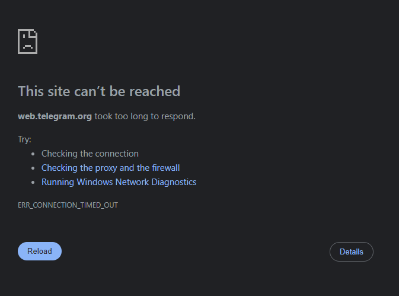
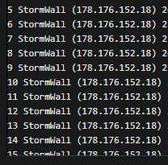

Сегодня наблюдаются сбои в работе телеграм МГТС, Москва. Через VPN сайт грузит.

Аналогично с этим отвалился comss.com
По крайней мере некоторые сайты за cloudflare тоже стали недоступны одновременно с телеграм.
В 14:15 заработали все сайты и Telegram без VPN
Краснодарский край Геленджик Не работает без впн телега на телефоне и компьютере
Ростелеком МСК - не работает
МТС МСК - не работает
Блокировка не по SNI, а именно IP
~/dev took 19s at 14:12:37
❯ curl -k -o NUL https://telegram.org/10MB --connect-to ::speedtest.selectel.ru
% Total % Received % Xferd Average Speed Time Time Time Current
Dload Upload Total Spent Left Speed
100 10.0M 100 10.0M 0 0 11.9M 0 --:--:-- --:--:-- --:--:-- 12.0M
~/dev at 14:14:16
❯ curl -k -o NUL https://telegram.org/10MB --connect-to ::telegram.org
% Total % Received % Xferd Average Speed Time Time Time Current
Dload Upload Total Spent Left Speed
0 0 0 0 0 0 0 0 --:--:-- 0:00:21 --:--:-- 0
curl: (28) Failed to connect to telegram.org port 443 after 21065 ms: Couldn't connect to server
~/dev took 21s at 14:14:43
❯ curl -k -o NUL https://telegram.org/10MB --connect-to ::telegram.org
% Total % Received % Xferd Average Speed Time Time Time Current
Dload Upload Total Spent Left Speed
0 0 0 0 0 0 0 0 --:--:-- 0:00:21 --:--:-- 0
curl: (28) Failed to connect to telegram.org port 443 after 21063 ms: Couldn't connect to server
~/dev took 21s at 14:15:47
❯
~/dev х INT at 14:15:47
❯ curl -k -o NUL https://ya.ru/10MB --connect-to ::telegram.org
% Total % Received % Xferd Average Speed Time Time Time Current
Dload Upload Total Spent Left Speed
0 0 0 0 0 0 0 0 --:--:-- 0:00:07 --:--:-- 0
МТС Московская область, а также Smile-Net Московская область, отвалилась телега и, внезапно, википедия.
Википедия подтверждаю. Причем блок по ip!
Похоже РКН учится
вики в блоке! Геленджик
Github и Gitlab тоже лежали

Вики вообще в 0 упала тут

{kind=link}
Но что интересно – google.com работал исправно
помои м наблюдениям ещё и гитхаб не кажет и один айпишнек из асн гугла
ето что то с чем то обычн последнее время они по вечерам ёрзали сосвоими блолкировками а тут средь бела дня
Много что упало с домашнего МГТС и с VPS на Reg.ru примерно в 14:00 МСК
Вернулось в норму в 14:27
С домашнего МГТС сайты даже не пинговались:
ping downdetector.com
ping: downdetector.com: Temporary failure in name resolution
С reg.ru пинг шел на один из IP Cloudflare, но страница не загружалась:
ping downdetector.com
PING downdetector.com (188.114.98.233) 56(84) bytes of data.
64 bytes from 188.114.98.233: icmp_seq=1 ttl=52 time=47.9 ms
64 bytes from 188.114.98.233: icmp_seq=2 ttl=52 time=48.0 ms
Из Польши и Нидерландов все работало штатно.
Санкт-Петербург тоже блок ВИКИ
Гитхаб, википедия, stackoverflow лежат. Телега, кажется ожила немного
Мне всё ещё кажется что такие блокировки не имеют отношение к самой телеге. Вероятно заблокировали случайно айпишник гугла, а вместе с ним полетело всё остальное.
Есть те, кто пользовался dns от quad9 с ними полностью все сайты упали. Ну точней с ними почему-то сейчас отдает ошибку о старте dns, с провайдерскими все ок. Кто-то еще испытывает проблемы с днс которые не от провайдера?
Возможно ли что это тестирование блокировок днс? Очень странная ситуация, упало буквально всё. Не похоже чтобы так резко начали блокировать IP как в 2018 году, очевидно что сейчас этим никто не занимается.
Подтверждаю “Temporary failure in name resolution” было на pihole, настроенной получать DNS от Quad9.
{kind=link}
В случае википедии DNS точно не при чем. Связанность по IP есть, по 443 порту - глухо:
$ ping 185.15.59.224
PING 185.15.59.224 (185.15.59.224) 56(84) bytes of data.
64 bytes from 185.15.59.224: icmp_seq=1 ttl=52 time=99.6 ms
64 bytes from 185.15.59.224: icmp_seq=2 ttl=52 time=66.8 ms
^C
--- 185.15.59.224 ping statistics ---
2 packets transmitted, 2 received, 0% packet loss, time 1001ms
rtt min/avg/max/mdev = 66.791/83.186/99.582/16.395 ms
$ telnet 185.15.59.224 443
Trying 185.15.59.224...
^C
wikipedia.org открывается только с ВПН
Github - не работал, но пока поднялся
Вики - лежит
comss.ru - проблем не было
Update - Википедия таки тоже ожила
Подтверждаю Ростелеком Урал. Со вчерашнего вечера были проблемы с загрузкой зарубежных сайтов, а сегодня видимо доигрались там ркн.
РКН Москва - все заработало
Теперь будет деградация dns
Владивосток, проводной Ростелеком, мобильный Билайн.
Работают телеграм (сайт), гитхаб.
Не работает Википедия.
~ # dig +short @1.1.1.1 wikipedia.org
185.15.59.224
Вот что-то подсказывает что это была попытка деградировать DNS
Википедия лично у меня заработала минут десять назад, хотя и позже телеграма. Гитхаб тоже пришел в норму.
У меня стал замедляться pornhub, как жить дальше?
Могу предположить, что помимо вики, тг и whatsapp, также задело и cloudflare.
Не смог достучаться по 443 на хост за cloudflare, но при этом напрямую все работало нормально.
На текущий момент неактуально. tg, wa пока через раз работают.
(мтс, ростов-на-дону)
То ГитХаб не открывается, то Википедия, то Телега тупит. Попеременно как-то работает.
Smile-Net Московская область, подтверждаю.
На Урале всё вернулось в норму спустя 30 минут блокировок
Москва, МГТС, на pihole до сих пор ответы N\A приходят на запросы к DNS 84.200.69.80. Обращения к DNS 9.9.9.9 возвращают SERVFAIL.
UP: с 1.1.1.1 начали идти IP вместо N\A.
Мегафон, не работает Telegram на Desktop-е. Через buydpi запустился.
Википедия заработала
Йота. Сейчас всё работает кроме Discord. Как раньше не знаю.
Прогрев начался
РКН объяснил сбой в работе WhatsApp и Telegram DDoS-атакой
пробовал gdpi (и плагин антизапрета) во время этих блокировок с различными параметрами, не работало ничего. Видимо, надо уже полноценный vpn ставить…
РКН героически отразил ддос-атаку на операторов связи:D
Так блокировки по IP были, тут никакие дипиайпи уже не помогут. Впрочем случай интересный и необычный сам по себе.
Итоги часа:
Роскомнадзор объяснил сбой в работе Telegram, What’sApp и других сервисов Ddos-атакой на российских операторов связи. В ведомстве отметили, что сейчас её последствия устранены.
https://portal.noc.gov.ru/ru/news/2024/08/21/sboj-v-rabote-servisov/
Википедию вроде блочили как Инсту или Твиттер, то есть вписать хост Википедии в блэклист + ip прописать в hosts, помогало вроде как, хотя полностью проверить не получилось.
Точно не DDoS атака, с мобильного интернета телеграм работал
придётся в программе раздавать файл с ip заблокированных ресурсов и локальным dns для их сопоставления.
Вообще, разве раньше не всё по ip блокировали? Если подумать, то в cmd команды ping и tracert норм работали к заблокированным ресурсам… Значит не по ip, хотя это кажется дешевле чем dpi
Кажется, вы ссылкой ошиблись
https://portal.noc.gov.ru/ru/news/2024/08/21/sboj-v-rabote-servisov/
Я просто в ахере от такого наглого пиздежа.
Кто-нибудь успел потестировать MTProto Proxy? Работали или нет?
Возможно это полуправда. Предположу, что кто-то сгенерировал много коннектов и ТСПУ сломался.
На этот случай включается bypass и трафик идет мимо ТСПУ
Через прокси MTProto все работало без проблем, хост прокси в Европе
Нет, это откровенный пиздеж. У провайдеров аплинки по десятки и сотни Гигабит, заддосить сразу всех рф провайдеров нереально. И это не объясняет недоступность только некоторых ресурсов.
Товарищ из РФ пишет, что телеграм-аккаунты, зарегистрированные на украинский и российский номера, работают, а аккаунт с польским номером не может подключиться к серверу. Если у кого-то есть возможность проверить, попробуйте.
Я не очень разбираюсь возможно ли такое реализовать с телеграм в принципе, передаётся ли там плейнтекстом какой-то ID, который можно сопоставить с номером - тут нужны специалисты по MTProto Mobile Protocol: Detailed Description
Special plain-text messages may be used to create an authorization key as well as to perform a time synchronization
у друзей в часы обвала лагала телега, зарегистрированная на японский номер ну и соотственно с яп ip. MTProto не проверяли
Интересно, что под блок попали только зарубежные сайты, в то время, как российсие Хабр и Яндекс грузились
И сегодня же wg на сибсетях заблокировали у меня.
Придется теперь без халявного варпа жить эх
Возможно конечно еще разблокируют как ранее уже было, но чет не уверен.
Новосибирск, электронный город - тоже wg забанили сегодня
Краснодар, Ростелеком wg перестал работать где-то в 2 часа дня
wg это что? wireguard?
Тоже. И что делать терь без wg
WireGuard же
Может его и блокировали тогда?
VLESS over REALITY
Ну кстати wg не наглухо заблокирован.
Нашел я пару серверов что работают.
И заметил что личная впска и варп отдают по 92Б. Например заблокированный серфшарк ноль байт возвращает на всех заблокированных конфигах wg. Так что надеюсь варп все-таки еще заработает. Очень уж удобная штука.
У меня на одном ноуте wg робит на втором нет. хотя оба на одном роутере и провайдере 
У меня отлетел wg после сбоя спустя часа через 3. Блок не по ip, на нем же стоит vless и работает без проблем. провайдер Ростелеком
точно такая же фигня. vless и ssh робят.
Судя по личным наблюдениям, был блок по ip кучи подсетей, причем только на v4 (Полностью резали связанность, вплоть до icmp). На v6 блоки были в этот момент только по sni.
К сожалению сняли блокировку очень быстро, не успел собрать больше инфы. Но очень похоже было на туркменистанский сценарий
Аналогично, наглухо отвалилось
Блокируют протоколы по DPI. Ситуация одинакова что на домашнем, что на мобильном интернете.
- WG не работает с двумя заграничными серверами: принято по 92 байта.
- WG успешно подключается к серверу в РФ
- OpenVPN не работает ни с одним из серверов (РФ не тестировал).
UPD: На роутере Mikrotik коннект есть обоих протоколов есть. Видимо раза с 50-го подключиться получается.
тот конфиг wg что был подключен и не обрывался робит
DigitalOcean для региона FRA1 сейчас выдает айпишники 64.226.X.X, которые сразу же становятся недоступны с российских провайдеров. С активным VPN всё ок. Возможно, тоже как-то связано.
Телега прямо сейчас снова не работает по ip в Кемеровской обл. Здесь очень часто тесты блокировок.
Тамбовская область, wireguard сдох примерно полтора часа назад, не работает на ТТК и на РТ, принимает 92 байта и на этом всё.
Йота Новосибирск. Сайты Telegram легли, зато сайт Discord заработал.
На мобильном всё также заводится с толкача. Мы привыкшие. Вижу, за десктоп взялись.
Есть такое по wg. Весь вечер ютуб работает. В роутере подключение на 21гб уже, значит осталось активно сначала блокировки. С телефона подключается, но трафик не идёт. Беда печаль, не хотелось бы обновлять роутер опять, недавно только кинетик взял, но поздно понял, что без флешки это борода.
upd: Всё. Даже активное соединение в роутере упало. Браузер еле-еле прогружает комменты и страницы ютуба, но ролики идут в 1080 нормально почему-то. yt-dlp видосы качает по 20-70кбит. Беда печаль.
upd2: утром 22 августа, wg стал пропускать трафик опять. Чуть кинетик новый не заказал ночью.)
Красноярск, Тинькофф Мобайл (Теле2), Yota - не работает Telegram, ни Android-приложение, ни веб-версия
Красноярск, Домру, работают мобильные и десктопные приложения, не работает веб-версия Ошибочка
Час назад OpenVPN до европы на проводном ттк отвалился. Понятно теперь для чего эти членососы полинтренета сегодня ложили
Хм, и более серьезная проблема: трафик до нидерландской впс-ки по XRay протоколу стал до 1мбит/с резаться. Никто больше не сталкивался?
Где-то час назад у меня начал блокироваться WireGuard. Провайдер - Ростелеком Москва. Сервер - VPS в Европе.
Проверил, с мобильного Билайна через нидерландскую впс по XRay скорость нормальная, а с проводного ТТК, до этой же впс скорость не больше 1-2 мбит. Проблема появилась после сегодняшнего сбоя.
Такое возможно, что провайдер стал резать неизвестные протоколы? Может у кого-то тоже такое сегодня появилось
https?=) xtls+reality не неизвестный протокол в отличие от Shadowsocks. Вэтом как раз его суть…
Тогда, возможно, стали резать скорость до любых адресов за пределами страны? Хотя в это верится слабо, нужны тесты
Что то мощно они сегодня. Влесс реалити с маскировкой под свой сайт скорость упала, но работает
Заметил ещё в 2 часа ночи по МСК какие-то шатания и потери пакетов. Твари.
Люди также жалуются на Wireguard сегодня
92Б. пробовал powershell скрипт который мусор отправляет и смену порта. чот не помогло.
Тогда по какому принципу они скорость научились резать? Любое внешнее https чтоли зарезают?
насколько сильно упала?
У меня shadowsocks и vless+reality до этого тоже медленно работали, хотя wireguard работал исправно. Сегодня же wg совсем отрубили, vless+reality кое-как работает, хотя на Ютубе видео грузит крайне медленно. Попробую развернуть vps на другом облаке
Кто нибудь можешь помочь с самого утра вожусь не могу подключиться к PPTP из-за этих блокировок, какой обход есть подскажите пожалуйста с меня на чашачку кофе подогрев.
МО, провайдер гигаком. На мобильнике WG до Нидерландов жив, 89мбит, столько же без него. На проводе XRay до Нидерландов жив, 78мбит и 90 без него.
Видимо, пока не дошло до нашего провайдера.
Я несколько минут долблю. Попробуйте ещё Amnezia (можно в конфиге подкрутить параметры).
Ростелеком. Reality под amd.com. Скорость не вах-вах, но для ютуба 1080 хватало. А вот outline в болгарии вообще проблем не заметил. Как была 80-90 скорость, так и осталась. Жаль оутлайн нельзя в роутер затащить.
Сейчас wg отпустило кстати. Дитё смотрит ютуб, всё норм.
Странное с WG. Две разных впски в европе. К одной подключается, 92 байта и всё. Вторая работает, даже на моб операторах где wg давно режут. Как такое может быть? 
Адреса vps по никому не известным критериям залетают в бан, причем иногда не полностью, а по всем портам кроме исключений (например пинг и порт 22 открыты). У меня несколько адресов так уже залетели, пришлось брать secondary.
уфанет йошка-ола, вчера еще wg был жив
Wireguard отвалился сегодня ночью, Москва, сеть МГТС. Принимает 92 байта и все, handshake не происходит. А мне для работы нужен именно Wireguard для доступа к сервисам Amazon. Если я его установлю на VPS в Европе, смогу через удаленный компьютер работать? Спасибо!
Сегодня на какое-то время сильно упала скорость к зарубежным VPS по протоколу VLESS (вместо 100 падало до 1…10 Мбит) и пинг URL доходил до 2-3 секунд вместо 300-500 мс. Тестировал на трех провайдерах (2 мобильных, 1 проводной) и трех разных VPS серверах с совершенно разными айпишниками.
Вы бы хоть писали где живете…какие провайдеры… спасибо
ЗЫ это ко всем относится)
ЗЗЫ Интеренсо также серверами пользуется много человек или нет… заблокированы ли русские сайты\по прямой ходят или нет
да всё это пока на уровне “ОБС”
провайдеры говорят что на ТСПУ пытаются зарубить “все” ВНПы
тот же телеграм якобы просто попал под раздачу
ибо режут/банят почти всё с направлением из РФ.
из телеграма
mtproxy по которому работает прокси телеграмовский схож по характеристикам с shadowsocks. и когда в Махачкале блочили shadowsocks/впны был задет и mtproxy тк он выглядит как непонятное нечто, прям как shadowsocks. dpi уже научились блочить его на постоянку.
и да, у роскомпозорища теперь игрушки другого уровня: DPI с барского плеча. способствует легкости работы dpi еще то что трафика стало меньше из-за того что анлима на сотовых операторах нет, а так же введены серые списки айпишников для которых скорости так себе. так что на самом деле блокировка телеграмма это вопрос желания
У меня скорость до нидерладской впс по xray до сих пор до 1 мбит зарезана. Что в таком случае лучше попробовать? Искать другие впс, до которых не режут скорость?
будут смотреть на результаты (не главное.)
поиграются и забудут (после того как отчитаются и распилят очередные транши. ИМХО)
так же несмотря на “общий” ТСПУ сильно зависит от конкретных провайдеров
некоторые местечковые вообще пока даже ютуб не везде режут скорости
вон ТОР + webtunnel + conflux (объединение 2х? тоннелей в 1)
curl -x socks5://127.0.0.1:9950 -o NUL -k --connect-to ::speedtest.selectel.ru https://test.googlevideo.com/10MB -w %{speed_download}
% Total % Received % Xferd Average Speed Time Time Time Current
Dload Upload Total Spent Left Speed
100 10.0M 100 10.0M 0 0 1053k 0 0:00:09 0:00:09 --:--:-- 1287k
1 078 860
это максимум для моего канала
а это IPv6. режут скорость вообще до нуля.
так что скорей всего и SNI режут. и списки IP (но пока что не все.)
оно после 1МБ скачаного просто повисло на скорости 0
curl -6 -o NUL -k --connect-to ::speedtest.selectel.ru https://telegram.org/10MB -w %{speed_download}
% Total % Received % Xferd Average Speed Time Time Time Current
Dload Upload Total Spent Left Speed
9 10.0M 9 943k 0 0 12145 0 0:14:23 0:01:19 0:13:04 0
Вы бы хоть писали где живете…какие провайдеры… спасибо
Beeline, Yota.
Xray + reality, Hetzner, скорость обрезалась примерно до 5 мбит/c, завел новый чистый айпи, там порезано до 1мбит/c, спб, ростелеком
Кто-то у кого протоколы заблокированы или скорость сильно режут, вы пробовали в рамках научного интереса по этим же протоколам на том же провайдере подключаться к VPS внутри страны?
Очень интересно, они только наружу блокируют и режут, или вообще любой трафик даже внутренний? 
В ПРИНЦИПЕ ЛОГИЧНО.
Зарезали YouTube на десктопе - люди стали ставить VPN (который на десктопе не особо резался, кстати).
Зарезали и замедлили впны на десктопе.
Твари, конечно.
А кто-то ещё продолжает хвалиться, что у нас интернет быстрый и дешёвый?
Последних сторонников выбивают.
Тула, Домру начал блочить вчера WG, до ru работает.
Думаю только наружу. Но не понятно по какому принципу. Тупо вообще весь исходящий трафик режут? Но тогда вообще весь внешний интернет лагал бы без впн. Режут по подсетям впс-ок? По странам? Какая-то дичь вообще, уже похоже на белые списки.
Непонятно как жить дальше. Нестабильный 1мбит/с - это только текстовые сайты читать и ютуб в 144p смотреть.
Для 3х моих клиентов: Дальний восток, Самара и Москва - обычный WG и Outline до РФ VPS работает, для этих же 3х WG и Outline наружу не работает с начала-середины Августа
зависит от провайдера и “фазы луны” (у меня часто одни и те же тесты в течении дня разные результаты дают)
вот сейчас
curl selectel.ru (RU/Spb) + SNI telegram.org
IPv4 не режут скорость
IPv6 режут. как и кучу других SNI
ну не прям IP/CIDR VPS
а наверно скорее AS некоторых хостингов
вот что то не вижу про жалобы на скорость Hetzner. при том что их “сайт” заблокирован по официальным спискам
Ну я думал об этом, что крупные хостеры могут в последнюю очередь резать.
Немного оффтоп. На Hetzner-е же всякие верификации + оплаты криптой (и тем более российскими картами) нет. Там наверное из россии сейчас нереально купить впску. А чисто теоретически есть ли хостеры, которые реселят впс-ки того же Hetzner-a? Чтоб хоть как то в их AS попасть
На initech есть hetzner
вот что то не вижу про жалобы на скорость Hetzner
Кстати немного сообщений выше Gregg123 как раз на Hetzner и жаловался, что скорость тоже урезана
ага теперь заметил его сообщение (склероз:).
ну вот остается как с неофициальным списком банов на ТСПУ
собирать списки провайдеров/хостингов/ IP/CIDR / AS на которые “режут” скорости
ибо режут как по моим тестам далеко не всё. та же ВНП как то обходит пока. ноды/relay ТОР через мосты “рабочие” тоже скорость не режется так уж сильно чтобы я ощутил (может на нормальных каналах где 100+ Мбит/сек и заметно.)
p.s. и таки наоборот. режут именно 1) крупные 2) известные 3) отказавшие РКНу (читай все)
в случае моего РТ и IPv6 там вообще $#%@
curl -6 -o NUL -k --connect-to ::speedtest.selectel.ru https://m.vk.com/10MB -w %{speed_download}
105k
curl -6 -o NUL -k --connect-to ::speedtest.selectel.ru https://e.mail.ru/10MB -w %{speed_download}
1405k
Внесу свою посильную лепту. Провайдер Novotelecom (г. Новосибирск, Академгородок), есть VPS в Hetzner (Германия) и в VDSina (Амстердам).
Референс до Deutsche Telekom в Берлине без прокси: 229/339 Mbs
С прокси shadowsocks, Hetzner: 271/338 Mbs
С прокси vless, Hetzner: 299/323 Mbs
С прокси vless, VDSina: 250/208 Mbs
Не выглядит так, чтобы особо замедляли, но просадка некоторая есть. Возможно в виду физических причин.
Москва, операторы Wifire и Билайн.
Хосты с AmneziaVPN на justhost, по трасеру идет маршрутизация на некий StormWall каждые 30 секунд. Судя по всему, перехват проводят по диапазону адресов, так как пробовал подцепить новый IPшник. Из открытых сервисов оставил только XRay, и все равно.
Там иногда вот такие перлы выдает:

Зачем палите своего местного провайдера, если у вас всё работает? Вот зачем? Можно же написать обтекаемо: типа город указать, этого достаточно. Здесь сидят шныри из РКН и прочие доносчики, которые с удовольствием воспользуются вашей глупостью. И завтра будете здесь писать: “вот и уменя заблокировали wg, печальный смайлик”. Не помогайте врагу причинять ущерб!
НЕ ПАЛИТЕ НАЗВАНИЯ СВОИХ МЕСТНЫХ НЕ ФЕДЕРАЛЬНЫХ ПРОВАЙДЕРОВ, ЕСЛИ У ВАС НЕ БЛОКИРУЮТ/ЗАМЕДЛЯЮТ WG, YOUTUBE И ПР.
Проверил vless tcp Reality и shadowsocks + prefix
СПб, ростелеком
hetzner Хельсинки ~110Mb/s
hetzner Германия ~150Mb/s
vless tcp Reality
СПБ, МТС мобильный
hetzner Хельсинки ~ 150Mb/s
hetzner Германия ~ 180Mb/s
Никаких замеледний, вообще
Такая же ситуация. Hetzner Хельсинки, AS24940.
тот же AS кстати, но я в консоли привязал другой floating ip (из германии) и там тоже замедление было
Я подозреваю, что дело не в AS, а в провайдере.
Как писал выше, у меня до одного и того же VPS сервера разные результаты:
Мобильный билайн скорость не режет.
Проводной ТТК режет до 1мбит (щас вообще 0.3-0.5 максимум выжимает).
Регион - алтайский край.
Что-то мне подсказывает, что если даже сменю хостера, нифига не поможет.
А со временем и остальные провайдеры к замедлению подтянутся и будет замедляться у всех
а я понял, все floating ips которые могут быть привязаны к серверу должны быть из одного AS, тоесть заменив ip я не менял AS
Попробовал просто раздать файл со своего айпи, такая же маленькая скорость, тоесть либо какие-то проблемы с сетью либо айпи в каком то списке на торможение
Да не сидит ркн тут, лол что за бред. Тем более ркн ничего не сможет сделать локальным, региональным провайдерам как например планета ру у которых до сих пор ютуб как работал так и работает.
мск, мгтс, openvpn со вчерашнего дня прилёг. протокол tcp. коннект вроде проходит но сразу отлетает. на мегафоне 1 в 1.
Мегафон, десктопный телеграмм заработал, при этом периодически отваливается гугловский днс (8.8.8.8)
Это не бред, при публикации рабочих вариантов для TM была вероятность получить на следующий день блок.
Вроде отпустило… Странно это всё.
Ну это не из-за этого форума, там большое кол-во людей мгновенно сливает все в телеграм, у впна становится больше пользователей, скачок в трафике виден цензору, и вообще у меня подозрение что там работает автоматика (авто бан по трафику или типо того)
Нет, там анонимус спрашивал персональный конфиг в ЛС, на следующий день IP блокировался. Как бы то оно не было, предосторожность лучше, чем беспечность.
Поддержу. Хорошо бы на уровне форума плашку повесить, чтобы не писали о рабочих сетях/провайдерах. От замедленных РКН-у проку не будет
У меня это началось ещё в мае на одном VPS. Подозревал, что ip попал в какие-то списки. Судя по всему так и было.
Зато как не напомнить новость о введение порта 400 ГБит/с на MSK-IX.
Так это не для вас, а чтобы утекающий впнами ютуб трафик компенсировать.
Непросто заткнуть 40% дыру. Кому-то пришлось расхлёбывать ту кашу, которые заварили власть дрожащие, как всегда.
Telegram часа два наглухо заблочен. Не соединяется совсем. Вчера отправка файлов повисала иногда, но в целом работало всё.
TTK волгоград.
Разбанили. С 16 до 20 часов не соединялась.
Добавил всем родственникам в список некобокса проксируемых приложений ещё и телеграм.
PS Сломали телегу мамам, бабушкам и детям по сути. Террористы наверняка в жабере коммуницируют или просто по левым симкам спокойно звонят или с радиостанций. Или могут вообще через маилру с PGP переписываться спокойно -никто ж маил ру почту не блочит никогда. Но изобразить бурную деятельность-то надо. Поэтому ломаем бабушкам связь.
МТС, Ростов-на-Дону. Тоже telegram прилёг.
p.s. видимо из-за событий в ИК-19
лучше скажите на каком уровне блокировки - местном? региональном?
У моего местечкового провайдера до 21 числа ютуб работал через гудбай, 21-го перестал, хотя большинство доменов из блоклиста, например рутрекер, продолжают блокироваться по SNI и, соответственно через гудбай открываются. Однако на телефоне ютуб работает как ни в чем не бывало. Поменял в хроме UserAgent на android и ютуб начал работать без дополнительных ухищрений, правда висит вначале и не всегда с первого раза открывает ролики.
У меня тоже перестал работать 21ого. Поменял параметры на “-6 -e1” и снова заработало
Попробовал, мне не помогло.
В этом способе много компромиссов:
Версия YouTube становится мобильной m.youtube.com, что в общем неплохо, но не работают хоткеи, и Главная грузится медленно (экономит трафик “телефона”)
Но работает
Вариант что-то быстро посмотреть на чужом компьютере, не углубляясь в средства борьбы
Согласен, это не очень удобно. Кроме хоткеев нет регулировки громкости в плеере и воспроизведение останавливается при переключении на др. окно или вкладку. Однако какие есть способы борьбы кроме впн? А нагрузка на бесплатные впн сейчас выросла, кроме того не всем он нравится по соображениям безопасности.
некоторым вполне помогают ByeDPI или GoodByeDPI
зависит от провайдера и /dev/hands
Если использовать собственные сомнительные приложения, а так я бы провайдеру меньше доверял. Или они боятся кражи паролей, наслушавшись страшилок, не зная о шифровании на сайтах.
Каким образом использование впн-сервисов связано с собственными сомнительными приложениями? И разве шифрование дает 100% защиту от MITM?
Не уверены - не пользуйтесь…
В приложение может быть встроен троян или оно может собирать личные данные. Остерегаются приложений не только новички. Продвинутые пользователи тоже избегают устанавливать нечто, неизвестно что делающее в системе.
Даёт. Но я же говорю, что в голове у простых пользователей…
так себе про “нечто”.
100500 примеров когда обновления программ с из официальных сайтов шли с вирусами/троянами или даже аддоны из официального хрома делали всякое.
и далеко не все антивирусы ловят. в отличии от охоты за “якобы” вредным
ddos добрался до Коми: не работает большое количество иностранных сайтов (даже пинг не проходит). Из критичного перестал работать cloudflare dns, пришлось перейти на гугловские
cloudflare постепенно блокировали с 2022 года, в начале отвалился WARP
Днс от них вроде не блокировали, по крайней мере не видел чтоб кто-нибудь жаловался на это
На целые сутки блокировали пол-интернета. Отпустило